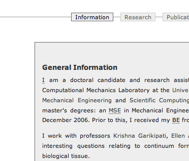
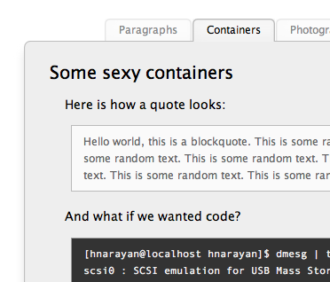
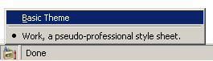
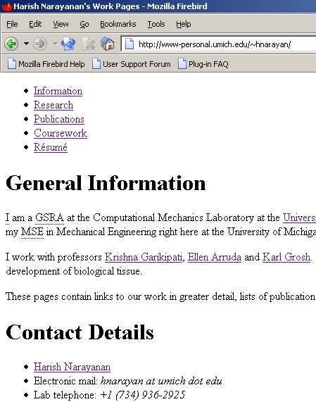
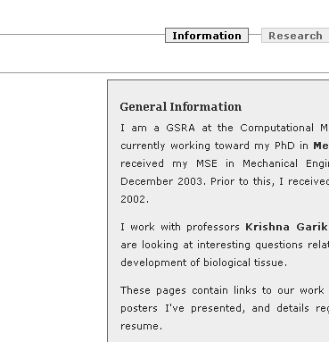
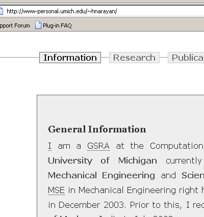

All rights, including copyright, in the content of these web pages are owned or controlled for these purposes by Harish Narayanan. In accessing these web pages, you agree that you may only download the content for your own personal, non-commercial use; except where expressly stated otherwise.
These web pages use icons from the Tango Desktop Project. You are free to use these icons in accordance with their original license.
Disclaimer
The content of these web pages does not reflect the views of the University of Michigan, and is provided “as is,” without any warranty of any kind.
Site notes
These are essentially meant to be pseudo-technical notes to self; but if you are interested in this sort of thing, feel free to read on. The number junkies in the audience will probably be interested in this site’s hit statistics.
A fresh coat of paint! (2007-04-28)
For a few years now, the earlier theme that I’d created for this web site has served me surprisingly well.
The older, purely functional site design.
Though it seemed rather spiffy when I first unveiled it, trends in web site design have evolved over these past few years. With rounded-corners, soft drop-shadows and splashes of colour being all the rage these days, it had begun to look a little long in the tooth.
Not wanting to be left out, I’ve now come up with “Simplicity two-point-oh!”
The newer, softer site design!
It uses icons from the Tango Desktop Project,


adding some much-needed colour, and I believe it captures the essence of the older theme, sprinkled with a dash of modernity.
The “console” like CSS (2005-03-18)
I’ve been meaning to write up random-yet-useful technical documentation and put it up on the site for a while now. In the process of going about determining what this entails, I ended up with the following style to signify console input/output.
Personally, I think it looks pretty sweet. Useful or not, isn’t really pertinent.
Sharing is a most natural impulse (2005-01-19)
When I first started revamping this site over a year ago, one of my first priorities was to come up with a simple, clean and professional theme. It didn’t really take as much time as I had originally imagined to cook-up something I like. Since we all know sharing is a good thing, once I’d ironed out the minor kinks, I distributed the design this website uses on oswd.org, for free (as in “Free Press”).
I think it was received quite well, as it has been downloaded thousands of times and has consistently maintained a high rating on the site. At various point, I’ve been pleasantly surprised with a friendly e-mail from a random stranger thanking me and showing me how they’ve gone about using it. I don’t remember the links to most those sites, but here are a few samples showing the design’s use in different places.
When you see things like this, it makes you feel warm and fuzzy on the inside. Like I started off saying, sharing is a most natural impulse. Go with it.
Site’s Hit Statistics Online (2004-08-12)
I’ve now uploaded and linked to this site’s hit statistics on a new section of this page. There is no real reason for you to be interested in any of this. But like I’d said earlier, this is supposedly psedo-technical notes to self. I just figured I’d satiate some primal urges of the number junkie sorts while I was going about my business.
(Now Hidden) Site Articles (2004-07-26)
There comes a time when you’ve done something so many times you cannot imagine doing it yet again. I’m now referring to answering to graduate school related questions from newbies. I’ve decided to put up a graduate school FAQ page so that I can direct further queries from people to it.
And so spawns a new class of currently hidden article pages. I refer to them as hidden because they aren’t obviously linked to from any of the other pages on the site. If someone comes up to me related topic or query, I’ll point them to it. Because I’m lazy, and that’s what lazy people do—minimize work.
Testing Rendering of Equations (2004-02-13)
Now for some equation tests, for when I finally decide to populate the research page(s). All of this has been done using TeX to GIF. I have rendered a PNG of the Schrodinger equation:

Equation 1.1: How cool am I?
Not bad, if I do say so myself. I wasted a lot of time trying to do this in MathML. But that isn’t of great use since our friend IE refuses to evolve.
Design Paradigm and Browser Inconsistencies (2004-01-10)
This is my first real foray into the world of XHTML and CSS. The site style is influenced a great deal by BlueRobot and concepts and code for the navigation menu were derived from Listamatic. There is a rather strict separation of content and style, which can be seen quite easily if you are using Mozilla Firefox. If you are, look for the little crayons icon at the bottom left corner, and change the stylesheet to default.
You will then see something like this,
the plain unstyled content for the page.
Unfortunately, all testing was carried out Gecko based browsers (Mozilla Firefox on MS Windows, Galeon on GNU/Linux). After the style was finalized, testing on Internet Explorer revealed some arbitrary weirdness in rendering.
I am not quite sure how this can be corrected at the moment, but I will in time.
It does however, render very nicely even with text based browsers like Lynx, and on graphical browsers, scales well with increasing/decreasing font size. There are no pixel based positioning schemes used in the style sheet. All of it is relative to the font size, so as that is changed, so will the relative postioning of the elements.
There is some level of site dynamism, and consistency between the pages is ensured by coding portions of the pages (header, footer, actual content, …) separately and including common elements through SSI. The navigation menu is generated on the fly for a given page using some rather elementary conditional SSI. Subtle elements such as the page last updated timestamp are automatically handled too.
All design goals revolved around keeping it aesthetically pleasing (and yet accessible), and ease of maintainence. In my mind I have met them both, and I hope that is enough to make sure I keep this up to date.
Site’s Hit Statistics
This site’s hit statistics are obtained by analysing Apache’s access log files using Analog and Report Magic.
| 2004/ | 2005/ | 2006/ | 2007/ | 2008/ |
| January | January | January | January | January |
| February | February | February | February | February |
| March | March | March | March | March |
| April | April | April | April | April |
| May | May | May | May | |
| June | June | June | June | |
| July | July | July | July | |
| August | August | August | August | |
| September | September | September | September | |
| October | October | October | October | |
| November | November | November | November | |
| December | December | December | December |
Remember, number junkies are people too.